▲ 한국관광공사가 해파랑길 42코스 사진으로 올린 해안 소나무와 길. 촬영 시기는 자료에 없고, 나무가 푸른 것으로 보아 겨울이 아닌 계절의 모습이다 ⓒ 한국관광공사 · 공공누리 제3유형(변경금지)
"해파랑길을 걷고 싶은데 겨울에는 해가 짧잖아요. 차는 어디에 세우고, 걷고 나서는 어떻게 돌아오죠?" 이 글은 2026년 10월 19일 기준으로 두루누비(한국관광공사)와 한국관광공사 TourAPI, 양양군 관광 사이트(tour.yangyang.go.kr), 양양군 공영주차장 현황, 한국천문연구원 일출몰 자료를 확인해 해파랑길 42코스(양양 죽도정 입구~하조대해변)를 겨울 자차 여행 관점에서 정리했다. 두루누비 코스 상세에는 9.8km, 약 4시간, 난이도 보통으로 나온다. 두루누비 42코스 상세 바로가기
핵심은 시간이다. 한국관광공사 정보에는 하조대 둘레길과 하조대 무인등대가 10월부터 3월까지 07:00~18:00로 나오고, 지금(10월 19일)도 이미 이 동절기 시간대에 들어와 있다. 양양군 관광 사이트의 하조대 안내도 둘레길을 동계(10/1~3/31) 7시~18시로 적고, 한국천문연구원 자료로 양양의 10월 19일 일몰은 17시 43분, 12월 일몰은 17시 6분~15분이다. 4시간 걸리는 길을 해 짧은 계절에 어떻게 짜야 하는지부터 풀어 보자.
💡 먼저 결론
해파랑길은 두루누비 공식 소개로 부산 오륙도~고성 통일전망대 750km, 50개 코스, 10개 구간이다. 그중 42코스는 양양 죽도정 입구에서 하조대해변까지 두루누비 기준 9.8km, 약 4시간, 난이도 보통이다. 한국관광공사 소개문은 9.9km, 약 3시간, 쉬운 편으로 적어 값이 다르다. 하조대 둘레길·무인등대는 10월~3월 07:00~18:00이고 기상악화 때 출입이 통제된다. 차는 죽도해변 주차장(196면)이나 하조대 쪽 무료 공영주차장에 세울 수 있으며, 종점에서 시점으로 돌아오는 대중교통은 두루누비가 12번 버스를 안내한다.
1. 왜 42코스인가 — 해파랑길 숫자와 기존 기사 겹침 확인
두루누비 공식 소개 페이지는 해파랑길을 부산 오륙도해맞이공원에서 강원 고성 통일전망대까지 이어지는 750km, 50개 코스로 설명한다. 인터넷에는 770km로 적은 글도 많지만 이 기사는 두루누비 수치만 쓴다. 구간은 부산(1~4코스), 울산(5~9), 경주(10~12), 포항(13~18), 영덕(19~22), 울진(23~27), 삼척·동해(28~34), 강릉(35~40), 양양·속초(41~45), 고성(46~50)으로 나뉜다.
동해안은 이미 이 사이트에서 많이 다뤘다. 삼척 새천년해안도로, 동해 무릉계곡, 정동진, 강릉 안목, 속초, 양양 낙산사, 고성 화진포, 포항 호미곶 기사가 있다. 그런데 양양 낙산사 기사와 송이 기사에서 하조대는 인근 연계지로 지나가듯 언급됐을 뿐, 해파랑길 코스와 겨울 이용 조건은 다루지 않았다. 그래서 낙산사 위쪽 해안의 42코스를 골랐다.
| 해파랑길 구간 | 코스 | 사이트 기존 기사 | 이 기사의 선택 |
|---|---|---|---|
| 삼척·동해 | 28~34 | 새천년해안도로, 무릉계곡 베틀바위 등 | 겹침 |
| 강릉 | 35~40 | 안목 커피거리, 오죽헌, 정동진 일출 | 도보 코스 중심 기사는 없음 |
| 양양·속초 | 41~45 | 낙산사, 속초 여행 가이드 | 죽도정·하조대 구간은 본격 기사 없음 |
| 고성 | 46~50 | 화진포·통일전망대 | 겹침 |
42코스를 고른 이유는 세 가지다. 양양군 공영주차장 현황에 죽도·하조대·기사문 일대 무료 주차장이 따로 올라 있어 시작·종료점 접근이 쉽다. 코스가 하조대 정자와 해변까지 이어져 겨울에도 걷고 볼 거리가 분명하다. 마지막으로 두루누비가 종점에서 시점으로 돌아오는 버스를 안내해 대중교통 복귀 방법을 공식 자료로 적을 수 있다.
2. 42코스 공식 정보 — 두 자료가 다르다
두루누비 코스 상세는 시점을 양양군 현남면 시변리 29-1(하조대농협 전방), 종점을 현북면 하광정리 629(하조대해변 남쪽)로 적고 거리 9.8km, 소요 약 4시간, 난이도 보통으로 표기한다. 같은 코스를 설명하는 한국관광공사 TourAPI 소개문은 9.9km, 도보 약 3시간, 난이도 쉬움으로 쓰고, 같은 항목의 주요시설란에는 소요시간 약 3시간 30분으로 나온다. 한 코스에 3~4시간대가 섞여 있는 셈이다.
| 항목 | 두루누비 코스 상세 | 한국관광공사 TourAPI 소개문 |
|---|---|---|
| 거리 | 9.8km | 9.9km |
| 소요시간 | 약 4시간 | 약 3시간(주요시설란은 약 3시간 30분) |
| 난이도 | 보통 | 쉬운 편 |
| 시점 | 현남면 시변리 29-1(하조대농협 전방) | 양양 죽도정 입구 |
| 종점 | 현북면 하광정리 629(하조대해변 남쪽) | 하조대해변 |
| 완보 인정 | 필수 경유지 7곳 중 3곳 이상 통과 시 | 확인하지 못함 |
겨울에는 걸음이 느려지고 사진 찍는 시간도 늘어난다. 이 기사는 두 자료 중 더 긴 두루누비 값(약 4시간)을 기준으로 일정을 짠다. 코스 번호 순서상 41코스(강릉 주문진해변~죽도정 입구)가 끝나는 곳이 42코스의 시점이고, 43코스(하조대해변~수산항, 9.5km)는 종점에서 이어진다.
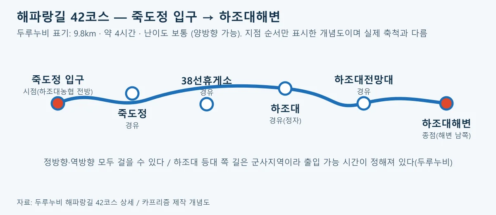
▲ 두루누비 42코스 상세의 경유지 순서를 정리한 카프리즘 제작 개념도. 실제 축척과 다르다.
두루누비는 정방향과 역방향 모두 걸을 수 있다고 안내하고, 코스 시작점의 방문 인증 QR로 온라인 스탬프를 찍는다. 스탬프함은 양양군 현남면 인구중앙길 88 부근(하조대농협 전방)이라고 적혀 있다.
3. 겨울 개방 시간 — 이미 10월부터 18시 마감
42코스는 도로와 해변을 걷는 구간이 많지만, 하조대 둘레길과 등대, 죽도정은 시간이 정해져 있다. 아래는 한국관광공사 TourAPI 정보를 기준으로 하되, 하조대 둘레길(동계 10/1~3/31 07:00~18:00, 기상 악화 시 출입 전면 통제)과 죽도정(하계 4/1~10/31 06:00~20:00, 동계 11/1~3/31 07:00~18:00, 군작전 출입통제구역이라 지정된 시간에만 개방)은 양양군 관광 사이트의 하조대·죽도정 페이지에서 같은 내용을 확인했다(2026년 10월 19일 기준). 하조대 무인등대의 시간은 한국관광공사 정보에서만 확인했다. 하조대 관광안내소 문의는 033-670-2516, 양양 관광안내는 033-670-2397~8이다.
| 장소 | 하절기 | 동절기 | 비고 |
|---|---|---|---|
| 하조대 둘레길 | 4~9월 06:00~20:00 | 10~3월 07:00~18:00 | 기상악화 시 출입통제, 연중무휴 |
| 하조대 무인등대 | 4~9월 06:00~20:00 | 10~3월 07:00~18:00 | 연중무휴 |
| 죽도정·죽도 전망대 | 4~10월 06:00~20:00 | 11~3월 07:00~18:00 | 군작전 출입통제구역, 지정 시간에만 개방 |
| 하조대(정자) | 상시 개방으로 표기 | 둘레길만 시간 제한 | |
| 하조대해수욕장·기사문해수욕장 | 상시 개방 | 주차 가능 | |
같은 하조대 일대라도 동절기가 시작되는 달이 죽도정(11월)과 둘레길·등대(10월)에서 다르다. 지금은 죽도정이 아직 하절기 시간이고 둘레길·등대는 이미 동절기 시간이다. 하조대 등대로 가는 길은 군사지역이라 출입 가능한 시간이 정해져 있다고 두루누비도 따로 안내한다.
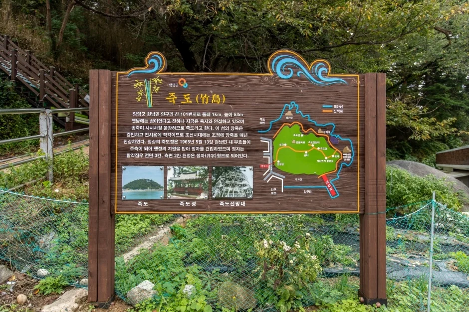
▲ 죽도 산책로 안내판. 글씨가 작아 상세 내용은 현장에서 확인해야 한다. 촬영 시기는 자료에 없다. ⓒ 한국관광공사 · 공공누리 제3유형(변경금지)
겨울 일몰은 한국천문연구원 생활천문관 월별 해/달 출몰시각의 양양 값으로 확인했다. 10월 19일 17시 43분, 10월 31일 17시 28분, 11월 1일 17시 27분, 11월 30일 17시 6분이고, 12월에는 1일 17시 6분에서 중순 17시 7분, 하순 17시 8~9분, 31일 17시 15분이다. 연중 일몰이 가장 이른 때는 12월 초다. 시민박명 종료는 12월 초 17시 35분이다. 12월 일몰은 속초·강릉 값과 1분 안팎 차이라 지역 편차는 크지 않지만, 바다 쪽 지형에 따라 체감 어두움은 더 빠를 수 있다. 같은 자료로 삼척의 12월 일몰은 17시 6분 안팎이어서 삼척 새천년해안도로 기사의 값과도 비슷하다.
✅ 시간 계산 예시(카프리즘 계산)
두루누비 소요 4시간에 사진·휴식 1시간을 더하면 약 5시간이다. 양양의 12월 일몰이 17시 6분 안팎이므로 정오에 출발하면 종점 도착이 일몰 무렵이라 여유가 없다. 늦어도 오전 11시 전에 걷기 시작해 16시 전후에 종점에 닿는 것이 안전하다. 둘레길 마감 18:00는 일몰 이후이므로 어두워진 뒤 걷지 않는 것을 기준으로 삼자.
4. 걷는 순서 — 죽도정, 38선휴게소, 하조대
두루누비는 코스 개요를 죽도정 입구에서 38선휴게소와 하조대를 지나 하조대해변까지 이어지는 길로 소개하고, 동해와 조선시대 유적, 38선 분단 역사를 함께 볼 수 있다고 설명한다. 표기된 주요 지점은 죽도정(5.0km), 38선휴게소(3.3km), 하조대(1.0km), 하조대전망대(0.4km), 하조대해변이다. 괄호의 값이 무엇을 뜻하는지는 페이지에 설명이 없다. 값이 5.0, 3.3, 1.0, 0.4로 줄어들기 때문에 누적 거리일 수는 없고, 합산하면 9.7km로 코스 전체 9.8km와 0.1km 차이라 지점 간 구간 거리로 읽는 것이 가장 맞아 보이지만 공식 확정은 하지 못했다. 이 수치로 지점별 도착 시각을 계산하지는 않았다.
| 지점 | 확인한 내용 |
|---|---|
| 죽도정·죽도 전망대 | 양양 10경 중 제6경. 1965년 건립, 정상에 팔각 정자, 섬 둘레 산책로와 계단, 흰색 원형 전망대(관광공사) |
| 38선휴게소·기사문해변 | 38선이 지나는 곳, 기사문해수욕장은 사계절 개방, 서핑 파도로 알려짐(관광공사) |
| 하조대 | 양양 10경 중 하나, 1955년 건립한 정자(6·25전쟁으로 소실된 것을 복원, 양양군 관광 사이트), 2009년 12월 9일 명승 제68호 지정(국가유산청 국가유산포털, 지정 면적 134,825㎡), 하륜·조준 두 사람의 성에서 이름을 땄다는 유래(관광공사) |
| 하조대 둘레길·등대 | 정자에서 데크길을 따라 등대(기사문 등대, 1962년 5월 최초 설치, 약 20km 식별 무인등대)까지, 어린이와 어르신도 쉽게 걸을 수 있다고 소개(관광공사) |
| 하조대해변 | 모래사장 길이 1.5km, 폭 100m. 개장은 매년 7~8월 약 50일(관광공사) |
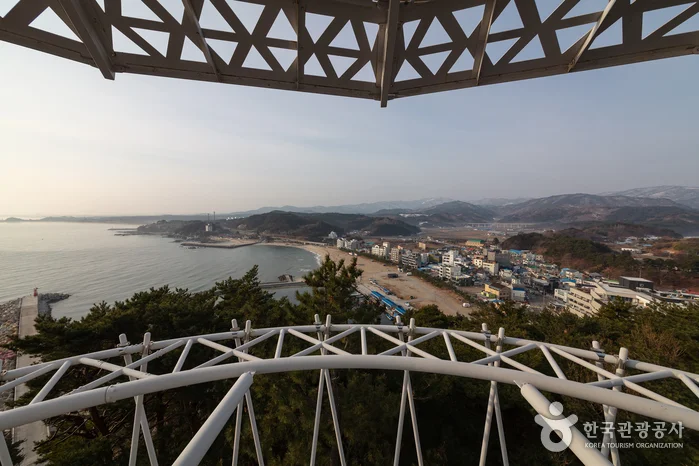
▲ 죽도 전망대에서 바라본 해안 마을 방향의 조망. 구름이 낀 하늘로 촬영 시기는 자료에 없다. ⓒ 한국관광공사 · 공공누리 제3유형(변경금지)
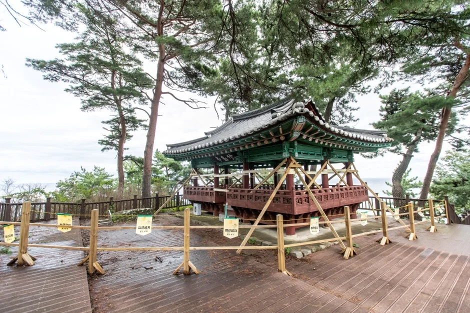
▲ 죽도정 정자. 데크가 젖어 있고 안전 줄이 둘러져 있어 비 온 뒤 미끄러울 수 있는 모습이다. 촬영 시기는 자료에 없다. ⓒ 한국관광공사 · 공공누리 제3유형(변경금지)
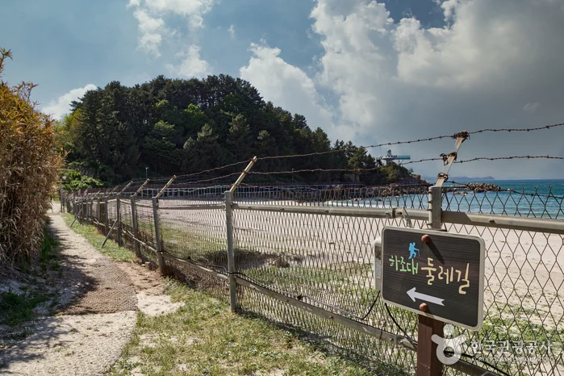
▲ 해안 철책 옆으로 난 길과 '하조대 둘레길' 방향 표지. 38선 접경 해안의 분위기를 보여 주는 42코스 사진이다. 촬영 시기는 자료에 없다. ⓒ 한국관광공사 · 공공누리 제3유형(변경금지)
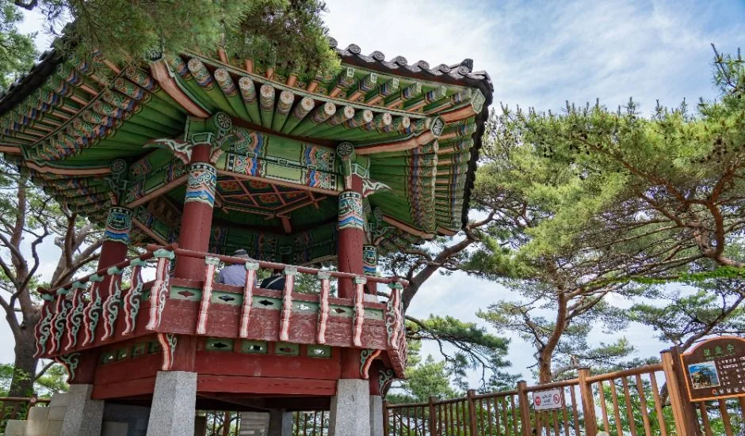
▲ 하조대 정자. 주변 나무가 푸른 모습이며 촬영 시기는 자료에 없다. ⓒ 한국관광공사 · 공공누리 제1유형
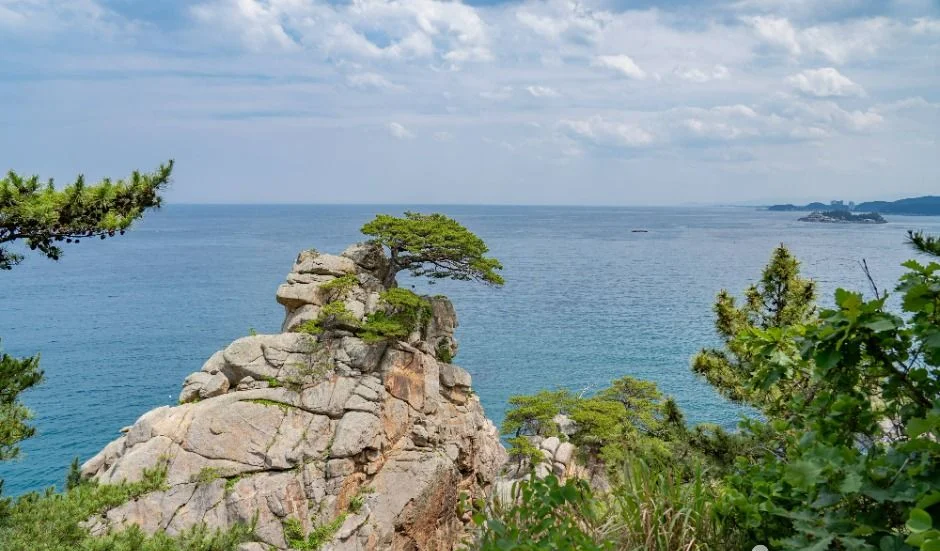
▲ 바위 위에 소나무가 선 하조대 일대 풍경. 관광공사는 이 일대의 노송을 애국가 방송에 등장해 '애국송'이라 불린 소나무로 소개하는데, 사진 속 나무가 그 소나무인지는 자료로 확인하지 못했다. ⓒ 한국관광공사 · 공공누리 제1유형
5. 자차로 가기·주차·돌아오기
양양군 공영주차장 현황 페이지에는 아래 무료 공영주차장이 올라 있다. 이 페이지의 유료 주차장 표에는 이 장소들이 없어 모두 무료로 읽힌다. 면수는 2026년 10월 19일 페이지 조회 값이며 페이지에 기준일은 따로 적혀 있지 않다. 성수기 혼잡과 운영 방식은 확인하지 못했다. 양양군 공영주차장 현황 바로가기
| 구분 | 주차장 | 주차면수 |
|---|---|---|
| 시점 쪽 | 죽도해변 주차장(현남면 시변리) | 196 |
| 중간 | 기사문항 주차장(현북면 기사문리 89-44) | 33 |
| 중간 | 기사문해수욕장 주차장(89-37 / 141-3) | 84 / 49 |
| 종점 쪽 | 하조대주차장(하광정리 4-1) | 34 |
| 종점 쪽 | 하조대해수욕장 주차장(노상 630 / 노외 80-2 / 노외 627-3) | 358 / 35 / 43 |
돌아오는 방법은 아래와 같다. 어느 방법이든 겨울 일몰 전 도착이 기준이다.
| 방법 | 내용 | 확인 범위 |
|---|---|---|
| 죽도해변 주차 후 일부만 걷고 같은 길로 복귀 | 9.8km를 한 번에 걷지 않고 38선휴게소 쪽까지만 왕복 | 카프리즘 제안, 공식 자료 아님 |
| 하조대 쪽에 주차 후 버스로 시점 이동 | 두루누비 안내: 하조대터미널에서 12번 버스를 타고 죽도해수욕장에서 내려 약 500m 도보. 종점에서 하조대터미널까지는 도보 약 1.4km | 두루누비 공식 안내 |
| 택시·두 대 이동 | 요금과 운행은 확인하지 못함 | 해당 없음 |
12번 버스의 세부 시각은 확인하지 못했다. 양양군 버스정보시스템 노선표에는 12번이 양양종합여객터미널에서 향호리까지, 기점 기준 첫차 07:00, 막차 19:00으로 올라 있으나 시각 열이 비어 있어 하조대 정류장 시각은 알 수 없다. 다른 사이트의 시각표는 갱신 시점을 알 수 없어 쓰지 않았다. 방문 전 양양군 버스정보시스템(bis.yangyang.go.kr)에서 확인하자.
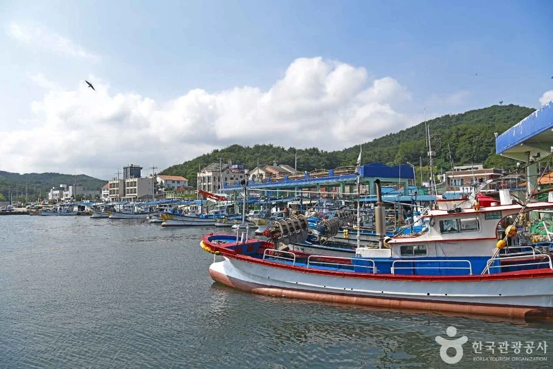
▲ 기사문항. 코스 중간 지점의 작은 어항으로 상시 개방, 주차 가능으로 표기된다. 촬영 시기는 자료에 없다. ⓒ 한국관광공사 · 공공누리 제3유형(변경금지)
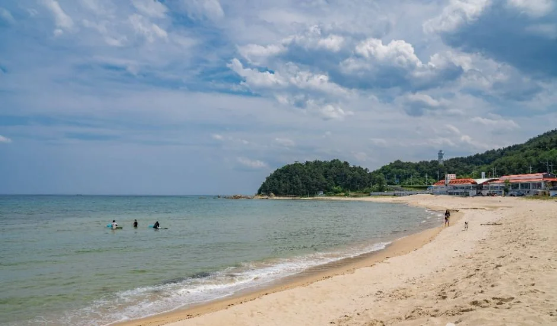
▲ 기사문해수욕장. 물에 들어간 사람들이 보여 여름철 사진으로 보인다. 이 해변은 사계절 개방이라고 안내된다. ⓒ 한국관광공사 · 공공누리 제1유형
양양까지 가는 길은 7번 국도 드라이브 코스를 정리한 7번 국도 부산~고성 드라이브 기사와, 이 해변에서 가까운 낙산사·낙산해변 드라이브 기사를 참고하자.
6. 겨울 바람·파도·낙석, 무엇을 조심할까
해안 도보길의 겨울 통제 기준은 공식 공지에서 확인하지 못했다. 확인된 공식 정보는 하조대 둘레길의 "기상악화 시 출입통제"와 죽도정 일대의 군작전 통제구역 표기, 하조대 등대 길의 군사지역 출입시간 지정 정도다. 아래 표의 나머지는 공식 통제 정보가 아니라 해안 도보길의 일반 안전 수칙이다.
| 상황 | 할 일 | 근거 |
|---|---|---|
| 강풍·풍랑·너울 | 출발 전 기상청 특보 확인. 바위 해안 데크 구간은 특보가 있으면 들어가지 않기 | 일반 안전 수칙 |
| 기상악화 | 하조대 둘레길은 기상악화 시 출입통제. 현장 통제선 따르기 | 한국관광공사 정보 |
| 낙석·미끄러운 데크 | 비·눈 뒤 젖은 데크와 바위 계단 주의. 낙석 위험 표지가 있으면 따르기 | 일반 안전 수칙(공식 통제 정보는 확인하지 못함) |
| 군사지역 | 철책·출입 통제 표지가 있는 곳은 들어가지 않기, 등대 쪽 길은 출입 시간 준수 | 두루누비 안내 |
| 일몰 이후 | 가로등이 적을 수 있어 어두워진 뒤 도보 구간 진행 자제 | 일반 안전 수칙 |
| 편의시설 | 화장실은 죽도정·동산항·기사문항·하조대해변, 매점은 죽도정 등에 있다고 안내되나 겨울 영업 여부는 확인하지 못함. 물과 간식 준비 | 두루누비 안내 |
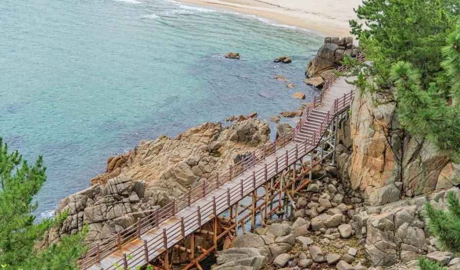
▲ 하조대 둘레길 항목으로 소개된 바위 해안 위 데크 계단. 바람이 센 날은 이런 구간에서 특히 조심해야 한다. 촬영 시기는 자료에 없다. ⓒ 한국관광공사 · 공공누리 제1유형
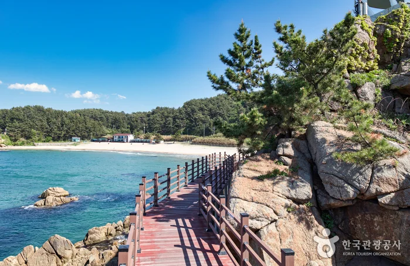
▲ 해안 바위 위 붉은 데크길과 멀리 이어진 해변. 42코스 사진으로 소개된 이미지다. 촬영 시기는 자료에 없다. ⓒ 한국관광공사 · 공공누리 제3유형(변경금지)
겨울 도로 운전 자체는 블랙아이스 운전 가이드를 먼저 보자. 이른 아침 일출 시간대에는 도로와 주차장이 얼어 있을 수 있다.
7. 겨울 반나절 일정과 이어 걷기
일정은 공식 개방 시간과 두루누비 소요시간에서 계산한 예시이며 실제 이동 시간은 공식 수치가 없어 적지 않았다. 일출 시각은 확인하지 못했고, 하조대는 한국관광공사가 일출 명소로 소개한다.
| 순서 | 할 일 | 체크 |
|---|---|---|
| 오전 | 죽도해변 주차장에 주차 후 죽도정 일대 산책(죽도정은 11~3월 07:00 개방) | 정자 데크 미끄러움 주의 |
| 정오 이전 | 38선휴게소·기사문 방향으로 걷기 시작 | 물·간식 준비 |
| 오후 | 하조대 정자와 둘레길, 등대 방향 | 18:00 마감, 기상 특보 확인 |
| 일몰 전 | 하조대터미널 방향 이동 후 12번 버스 또는 계획한 복귀 수단 | 12번 시각 사전 확인 |
체력과 시간이 남으면 이어 걷기를 고려할 수 있다. 두루누비 기준으로 41코스는 강릉 주문진해변에서 죽도정 입구까지 12.8km(약 4시간, 쉬움)이고, 43코스는 하조대해변(남쪽)에서 수산어촌체험휴양마을 옆 수산항까지 9.4km(약 3시간 30분, 쉬움)다. 43코스는 여운포리~동호해변 구간이 도로 확포장 공사 중이라 통행에 주의하라고 안내되고, 인적이 드물고 매점이 거의 없으니 간식과 마실 것을 미리 준비하라는 안내도 있다. 41코스에는 남애항 일대 노후시설 철거 공사로 일시 통제될 수 있다는 주의가 붙어 있다. 겨울에는 하루에 한 코스만 짜는 것이 안전하다.
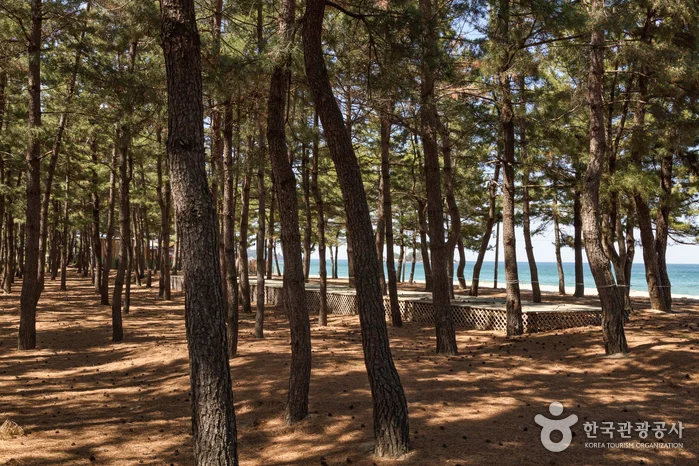
▲ 소나무 숲 사이로 바다가 비치는 42코스 사진. 촬영 시기는 자료에 없다. ⓒ 한국관광공사 · 공공누리 제3유형(변경금지)
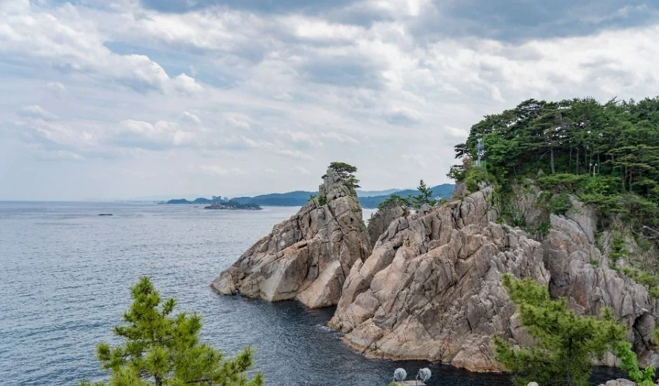
▲ 하조대 무인등대 항목으로 소개된 바위섬 풍경. 촬영 시기는 자료에 없다. ⓒ 한국관광공사 · 공공누리 제1유형
같은 해안에서 일출·일몰 시간을 맞추는 방법은 정동진 일출 기사에서도 다뤘다.
✅ 출발 전 체크
1) 두루누비 42코스: 9.8km, 약 4시간, 보통(관광공사 소개문은 9.9km, 약 3시간으로 다름) 2) 하조대 둘레길·등대 10~3월 07:00~18:00, 기상악화 시 통제 3) 죽도해변 196면·하조대 쪽 무료 공영주차장 4) 복귀는 하조대터미널 12번 버스(시각 확인 필요) 5) 사진은 촬영 시기를 알 수 없고 여름 등 따뜻한 계절로 보이는 사진이 많다.
8. 정리
해파랑길 42코스는 양양 죽도정 입구에서 하조대해변까지 두루누비 기준 9.8km, 약 4시간, 난이도 보통이며, 하조대 둘레길과 등대는 이미 10월부터 07:00~18:00 동절기 시간이 적용된다. 차는 죽도해변(196면)이나 하조대 쪽 무료 공영주차장에 세울 수 있고, 두루누비는 종점에서 12번 버스로 시점 방향으로 돌아오는 방법을 안내한다.
12번 버스 세부 시각, 겨울 매점 영업, 낙석·월파 통제 기준은 확인하지 못했다. 양양의 12월 일몰은 17시 6분~15분(한국천문연구원)이다. 이 기사는 2026년 10월 19일 기준이므로 방문 전 양양군 관광 안내(033-670-2397~8)와 두루누비에서 한 번 더 확인하자.